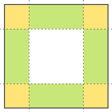

Свойство border-image-repeat.

Свойство border-image-repeat задаёт способ заполнения фоном боковых сторон рамки (зелёные области на рисунке).
Значения:
- stretch — (по умолчанию) фоновые картинки растягиваются на всю длину боковых сторон.
- repeat — фоновые картинки повторяются, чтобы полностью заполнить боковую сторону. При этом последние картинки обрезаются, если не влезают полностью.
- round — боковые стороны полностью заполняются целым числом фоновых картинок. При этом они могут сжиматься или растягиваться.
- space — боковые стороны заполняются целым числом фоновых картинок. Если осталось пустое место, то между картинками появляются равномерные отступы.
Можно устанавливать режим заполнения отдельно для горизонтальных и вертикальных сторон рамки:
/* Все стороны рамки заполняются в режиме stretch. */
border-image-repeat: stretch;
/* Горизонтальные стороны рамки – repeat, вертикальные – round. */
border-image-repeat: repeat round;